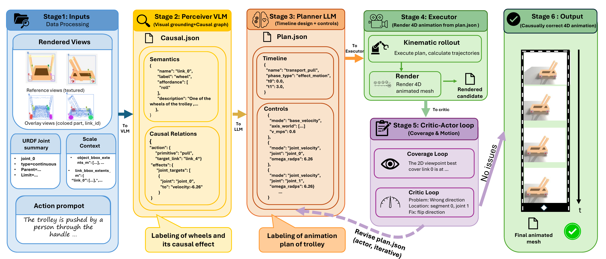

Project Page
ArtiMo: Agent-Driven Articulated Mesh Animation
A zero-shot agent framework for text-guided articulated mesh animation with kinematic constraints, causal part reasoning, and visual self-improvement.
Abstract
Animating articulated 3D meshes via text requires satisfying strict kinematic constraints, modeling causal interactions between parts, and achieving instruction fidelity. Due to a scarcity of training data, existing data-driven mesh animation methods are largely inapplicable. To address this, we propose ArtiMo, a novel agent-driven framework for text-guided articulated mesh animation. Operating in a zero-shot manner, ArtiMo employs an autonomous agent powered by Large Language and Vision-Language Models to orchestrate motion generation. By synergizing the explicit kinematic constraints of URDF with the agent's reasoning and planning capabilities, it effectively produces causally coherent part motions and interactions without requiring model fine-tuning. To ensure high-fidelity results, the agent additionally utilizes a visual self-improvement mechanism: generated animations are rendered into compact keyframes and motion cues, enabling the VLM to iteratively diagnose and correct errors. Furthermore, we contribute a new benchmark dataset spanning 21 object categories with high-quality motion annotations. Extensive experiments demonstrate that ArtiMo significantly outperforms existing baselines, particularly on complex, causally-driven motions.
Method
ArtiMo combines structured articulated assets, visual-language diagnosis, and executable motion planning in a closed loop.

Full Demo
A concise end-to-end video covering qualitative results, evaluation, and ablation study.
Interactive 4D Mesh Gallery
Swipe through cases and switch between the aligned first-frame mesh, the action condition, and the exported animated GLB. The initial camera follows the coverage-loop selected view.